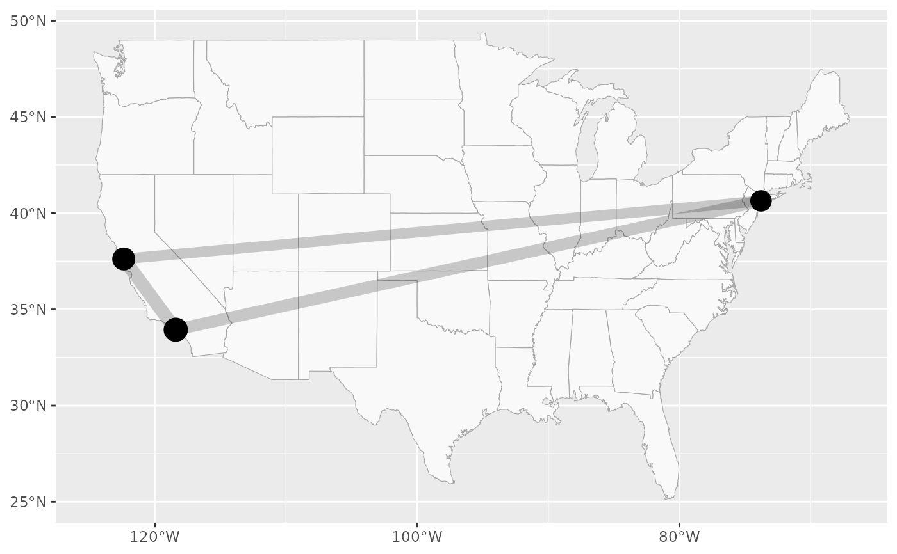

Plotting function to visualize the flight connections from the flights dataset.
This function requires the package ggplot2 to be installed.
Usage
plotFlights(
airportIndices = NULL,
airports_sel = NULL,
connections_sel = NULL,
graph = NULL,
plotAirports = TRUE,
plotConnections = TRUE,
labelAirports = FALSE,
returnGGPlot = FALSE,
useAirportNFlights = FALSE,
useConnectionNFlights = FALSE,
minNFlights = 0,
map = "state",
vertexColors = NULL,
vertexShapes = NULL,
edgeColors = NULL,
xyRatio = NULL,
clipMap = FALSE,
useLatex = FALSE,
edgeAlpha = 0.2
)Arguments
- airportIndices
The indices of the airports (w.r.t.
airports_sel) to include.- airports_sel
The airports to plot. Might be further subset by arguments
airportIndices,graph. IfNULL, thenflights$airportswill be used.- connections_sel
A three columns data frame as output by
flightCountMatrixToConnectionList(). IfNULL, thenflights$nFlightswill be used to construct one.- graph
An optional
igraph::graphobject, containing a flight graph to plot. Vertices should either match the selected airports in number and order, or be named with the corresponding IATA codes of the airports they represent.- plotAirports
Logical. Whether to plot the airports specified.
- plotConnections
Logical. Whether to plot the connections specified.
- labelAirports
Logical. Whether to show the IATA code next to each plotted airport.
- returnGGPlot
If
TRUE, aggplot2::ggplotobject is returned and not plotted immediately.- useAirportNFlights
Logical. Whether to vary the size of the circles representing airports in the plot, according to the number of flights at that airport.
- useConnectionNFlights
Logical. Whether to vary the size of the edges representing connections in the plot, according to the number of flights on that connection.
- minNFlights
Numeric scalar. Only plot connections with at least this many flights.
- map
String or
data.frameorNULL. What map to use as the background image. Strings are passed toggplot2::map_data(), data frames are assumed to be the output ofggplot2::map_data().- vertexColors
Optional vector, named with IATA codes, to be used as colors for the vertices/airports.
- vertexShapes
Optional vector, named with IATA codes, to be used as shapes for the vertices/airports. Is coerced to
character.- edgeColors
Optional vector or symmetric matrix (character or numeric), to be used as colors for edges/connections. If this is a vector, its entries must match the plotted connections (in the order specified in
connections_selor implied byigraph::get.edgelist). If this is a matrix, its row/column names must be IATA codes, or its rows/columns match the plotted airports (in number and order).- xyRatio
Approximate X-Y-ratio (w.r.t. distance on the ground) of the area shown in the plot.
- clipMap
Logical or numeric scalar. Whether to ignore the map image when determining the axis limits of the plot. If it is a positive scalar, the plot limits are extended by that factor.
- useLatex
Whether to format numbers etc. as latex code (useful when plotting to tikz).
- edgeAlpha
Numeric scalar between 0 and 1. The alpha value to be used when plotting edges/connections.
Value
If returnGGPlot is TRUE, a ggplot2::ggplot object, otherwise NULL.
See also
Other flight data related topics:
flightCountMatrixToConnectionList(),
flights,
getFlightDelayData(),
getFlightGraph()
Examples
# Plot all airports in the dataset
plotFlights(plotConnections = FALSE, map = 'world')
# Plot a selection of airports
plotFlights(c('JFK', 'SFO', 'LAX'), useConnectionNFlights = TRUE, useAirportNFlights = TRUE)

# Plot airports with a custom connections graph
IATAs <- c('ACV', 'BFL', 'EUG', 'SFO', 'MRY')
graph <- igraph::make_full_graph(length(IATAs))
plotFlights(IATAs, graph=graph, clipMap = 1.5)